Desenhando a camada de confiança para a saúde domiciliar
Saúde domiciliar não tem falta de demanda. O que falta é infraestrutura de confiança: identidade verificada antes de qualquer pessoa entrar em uma casa, pagamento retido até a confirmação do serviço, e responsabilidade documentada para as três partes da transação, simultaneamente.
+35%
conversão projetada no checkout
0
pagamentos liberados sem confirmação de serviço
3
tokens de confiança · cadeia de custódia do agendamento ao pagamento

Estado atual · antes deste projeto
O produto sob demanda não existia. O ecommerce existia para produtos, mas não para serviços profissionais em domicílio.
O problema
A real restrição da saúde domiciliar é a confiança. O atrito é só o sintoma visível, e a causa raiz vai mais profundo.
Um paciente abre a porta da própria casa para um estranho. Isso não é uma entrega de comida. É alguém tocando seu corpo, colhendo seu sangue, vacinando seu filho.
O MedMe já tinha um ecommerce farmacêutico funcionando. O que não existia era um produto sob demanda com identidade profissional verificada, proteção de pagamento e responsabilidade cobrindo os três lados da transação simultaneamente: paciente, profissional e clínica.
As telas originais ficaram com a empresa. Tudo aqui é uma reconstrução do zero para o portfólio.
Três usuários, três medos
Três atores estão ativos simultaneamente em cada atendimento. Cada um tem um conjunto diferente de preocupações. Desenhar para um sem considerar os outros produz um sistema que falha nas costuras.
Paciente
Identidade e dinheiro
Essa pessoa é mesmo quem diz ser? E se o serviço não acontecer? Quem retém meu pagamento até que aconteça?
Profissional
Equipamento e cobertura
O material vai estar pronto na clínica? Estou legalmente coberto se algo der errado na casa do paciente?
Clínica
Qualidade e reputação
Alguém representa minha marca na casa de um estranho. Eu não posso estar lá. Preciso de responsabilidade documentada.
Cada decisão de design neste produto responde a pelo menos um desses medos. O sistema de tokens e a lógica de pareamento endereçam os três simultaneamente: foi aí que a maior parte da complexidade pousou.
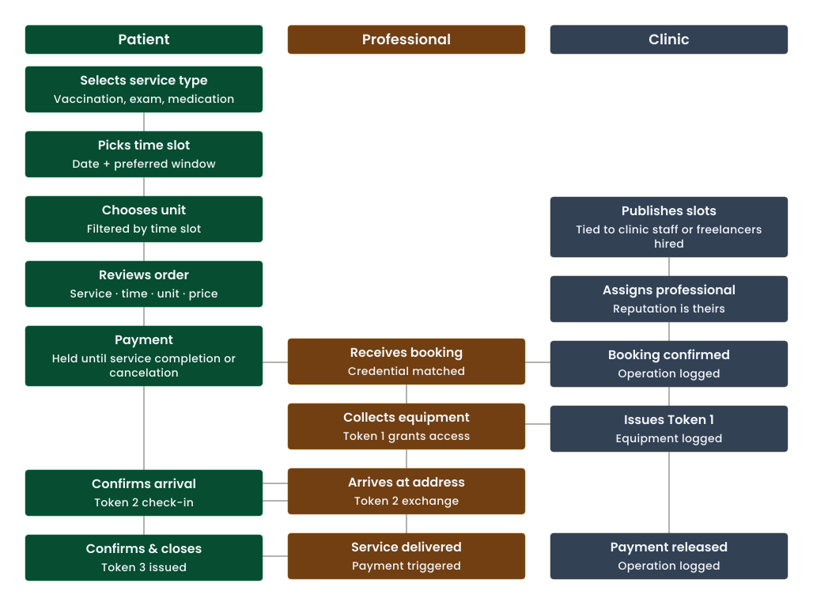
A decisão de agendamento
Apps de agendamento de saúde costumam mostrar todas as unidades antes de checar disponibilidade. Você escolhe uma com base em distância ou reconhecimento de nome. Depois procura um horário e descobre que o slot que você queria já foi. Você volta. Escolhe outra unidade. Tenta de novo.
Esse ciclo não é só frustrante. A arquitetura de informação é o que está de fato quebrado, e é a falha estrutural por trás da maior parte do abandono de agendamento na saúde digital.
27% dos pacientes trocaram de prestador especificamente por atrito digital (McKinsey, 2025). Eles não abandonaram o processo. Foram para um concorrente.
O MedMe inverte isso: o paciente escolhe quando, e o sistema mostra apenas o que está disponível naquele horário exato.
O paciente escolhe quando quer o serviço. O sistema só mostra clínicas com disponibilidade confirmada naquele horário específico. Slots que não podem ser cumpridos não existem na interface. Nunca são oferecidos.
Antes de escolher o horário, o paciente escolhe o tipo de atendimento: domiciliar ou na clínica. Esse único toggle filtra tudo o que vem depois: quais clínicas aparecem, quais listas de equipamento se aplicam, o que o cartão do profissional mostra. Atendimentos domiciliares carregam o protocolo completo de tokens. Atendimentos na clínica usam um check-in simplificado. A IA de agendamento é a mesma nos dois casos.
A própria seleção de horário se divide em três subetapas: seletor de mês, depois dia, depois horários disponíveis. Cada etapa reduz o espaço de escolha antes que a próxima se abra. O paciente nunca enfrenta uma grade com todos os horários abertos. Ele chega a uma lista curta e filtrada para o dia específico que já escolheu.
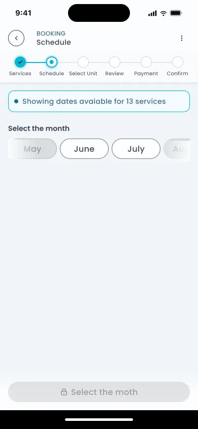
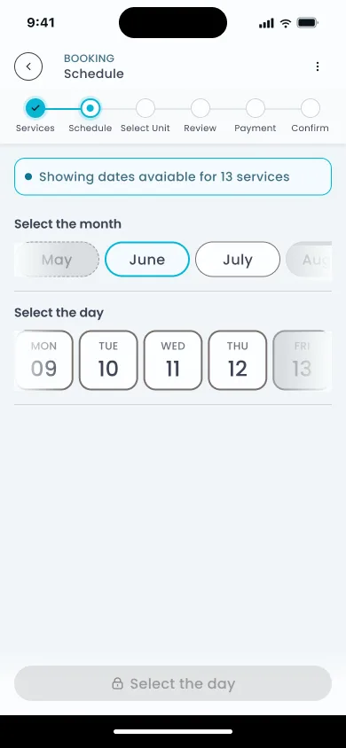
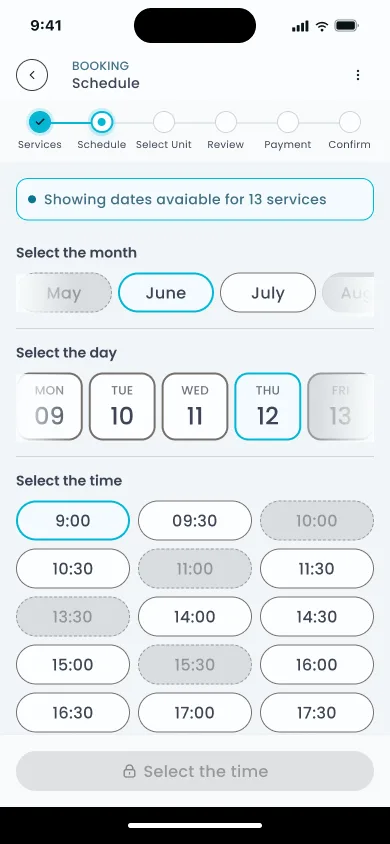
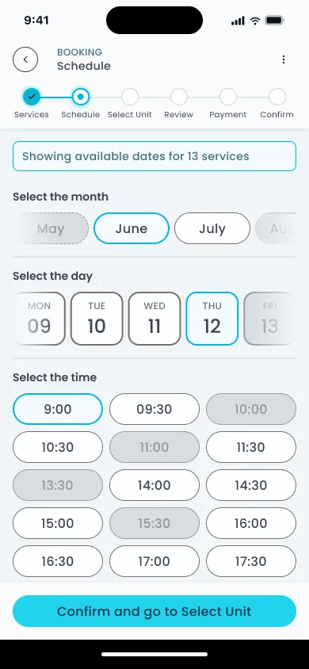

Pareamento com competência regulatória
A clínica escolhe o profissional, não o paciente: o único modelo que se sustenta dado como a responsabilidade legal realmente funciona na saúde.
A certificação e a reputação da clínica são o que o paciente está confiando ao agendar. Se a clínica designa o profissional, a responsabilidade fica em um só lugar. Se o paciente escolhe, a responsabilidade se fragmenta e ninguém é dono do resultado.
Modelo padrão
O paciente navega por uma lista de profissionais. Escolhe um. A responsabilidade é difusa: a plataforma, o profissional e a clínica compartilham responsabilidade parcial sem uma cadeia clara.
MedMe
A clínica recebe o agendamento. Designa o profissional internamente. O paciente vê as credenciais após a designação. A clínica é dona do resultado. A responsabilidade é clara, a confiança é verificável.
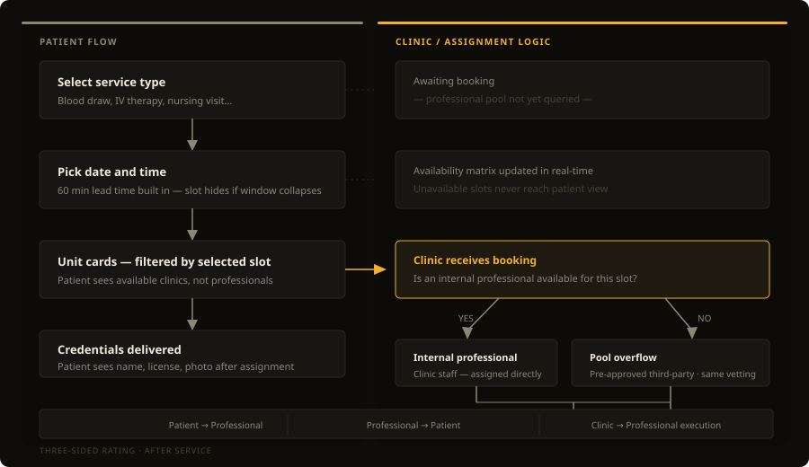
Quando uma clínica não tem profissional disponível, um pool pré-aprovado de profissionais terceirizados preenche a lacuna. Mesmas certificações: clínicas registradas na ANVISA, profissionais licenciados pelo CRBM. Mesma triagem. Para o paciente, o cartão parece idêntico. Para a clínica, a designação via pool é sinalizada no painel operacional. A resposta nunca é "indisponível".
Depois do atendimento, os três atores se avaliam mutuamente. O paciente avalia o profissional. O profissional avalia o paciente. A clínica avalia a execução do profissional. Uma avaliação de três lados cria responsabilidade em cada ponto da cadeia, não só no final, onde o paciente deixa uma avaliação.
Uma coisa que isso não resolve totalmente: quando um profissional do pool entrega o serviço em vez da própria equipe da clínica, a clínica está avaliando alguém que não contratou. Se os operadores se engajam com esse feedback da mesma forma para designações via pool e para a própria equipe foi uma questão que ficou aberta.
A lógica de tempo
Todo horário mostrado ao paciente já inclui 60 minutos de antecedência embutidos: a janela que o profissional precisa para buscar equipamento na clínica antes de se deslocar. Se essa janela colapsa por causa de um agendamento de última hora ou uma confirmação tardia, o slot desaparece do seletor antes mesmo de ser oferecido. O paciente nunca vê um horário indisponível.
Mostrar um horário que não pode ser cumprido é pior do que não mostrar nenhum horário. Um agendamento confirmado seguido de cancelamento destrói a confiança mais rápido do que simplesmente mostrar o horário como indisponível.
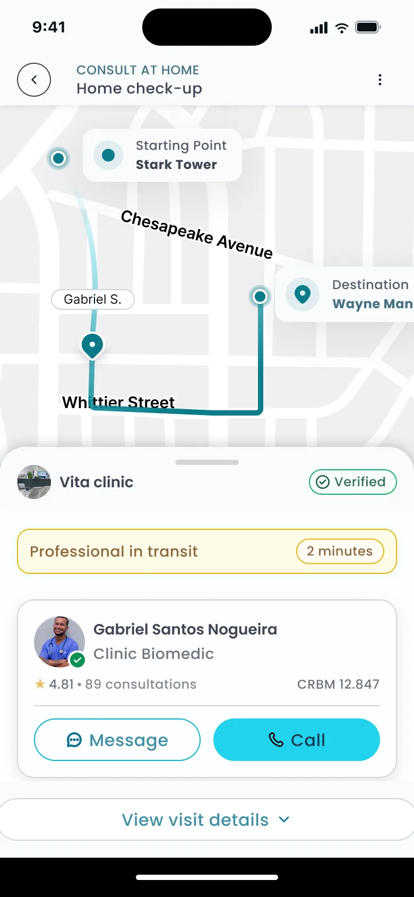
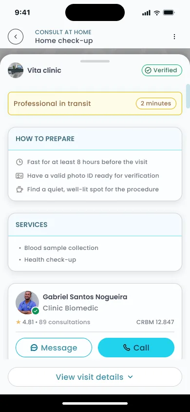
O sistema de tokens
Três tokens, cada um resolvendo um problema de forma independente, se conectam numa cadeia que paciente, profissional e clínica usam do agendamento até a liberação do pagamento.
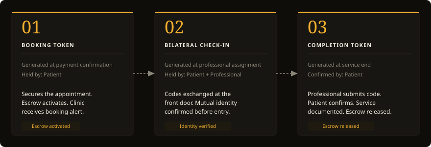
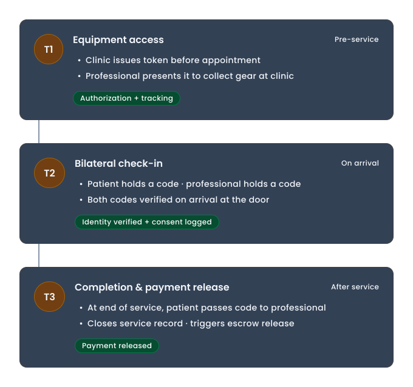
O check-in bilateral remete a um padrão que já existe em serviços que os pacientes usam diariamente: o PIN bilateral do Uber, a verificação de identidade do Airbnb. A diferença é o contexto: aqui é uma casa particular e um procedimento médico.
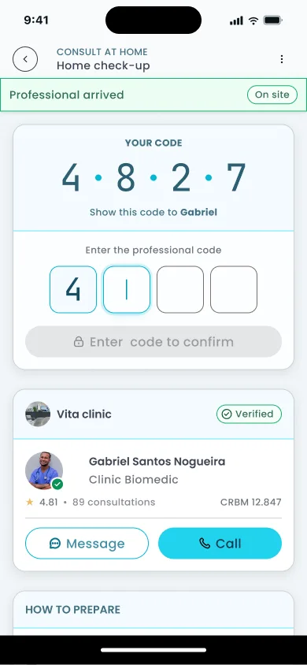
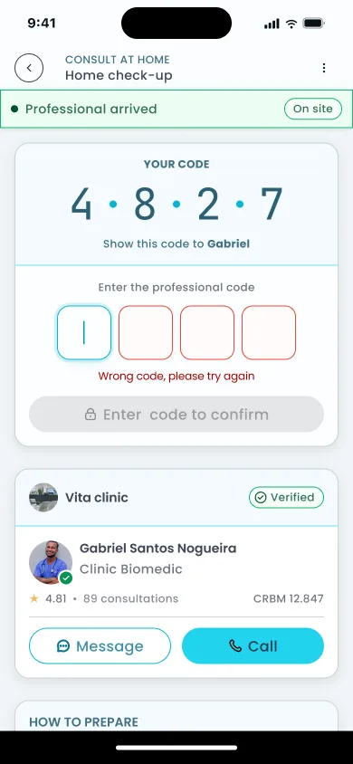
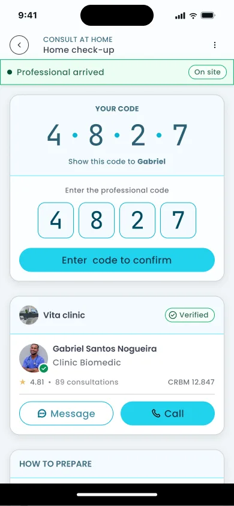
Checkout e pagamento
O abandono de checkout na saúde atinge o pico no momento em que o usuário percebe quantas etapas ainda restam. Um indicador de progresso persistente de 6 etapas torna o ponto final visível desde a primeira tela. O formulário se divide em três subetapas que abrem sequencialmente, cada uma se desbloqueando apenas quando a atual é válida. Menos campos visíveis ao mesmo tempo, sem nenhuma informação de fato escondida. A redução para 12-14 campos segue o benchmark da Baymard para a quantidade de campos a partir da qual o abandono cai de forma significativa.
O pagamento multimétodo permite que o paciente divida o total entre o saldo MedMe e um segundo método: Pix ou cartão. O campo de cupom fica na mesma tela da seleção de método de pagamento. Inserir um código atualiza o total imediatamente, antes de confirmar um método. Uma barra visual de divisão mostra quanto cada método cobre. Sem cálculo mental.
57% dos pacientes dizem que a transparência de preço influencia onde buscam atendimento (McKinsey, 2025). A nota de garantia na confirmação mostra ao paciente o que está pagando, para quem, e que o dinheiro fica retido até a confirmação do Token 3. Abaixo disso, o protocolo de tokens é reafirmado em linguagem simples: "Vita Clinic designa um profissional", "Credenciais enviadas para revisão", "Faça o check-in digital no dia". A visibilidade do preço é um critério de seleção antes mesmo de o paciente agendar.
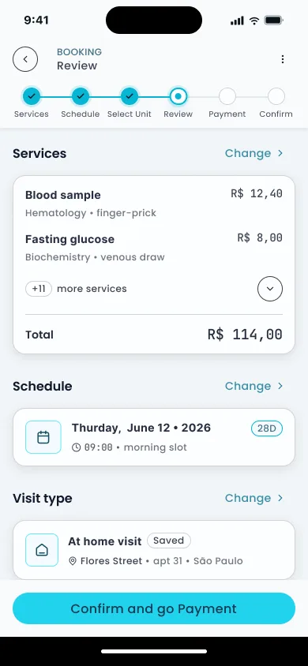
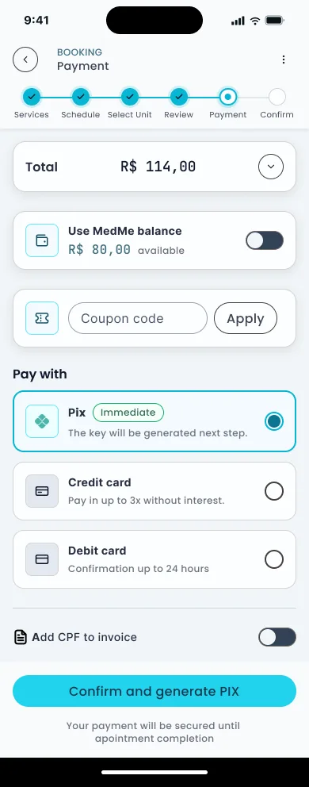
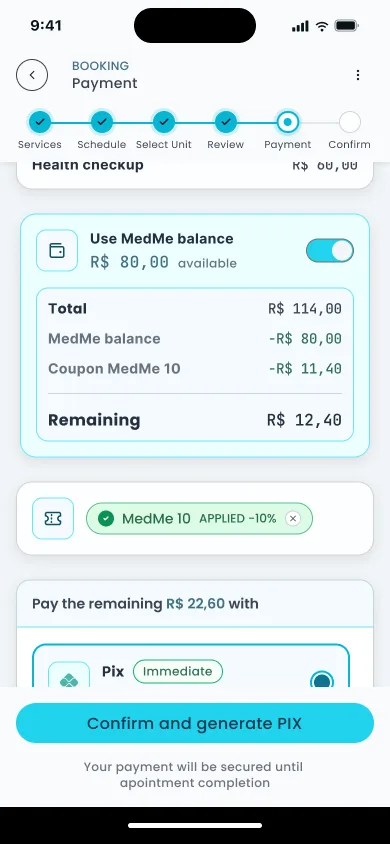
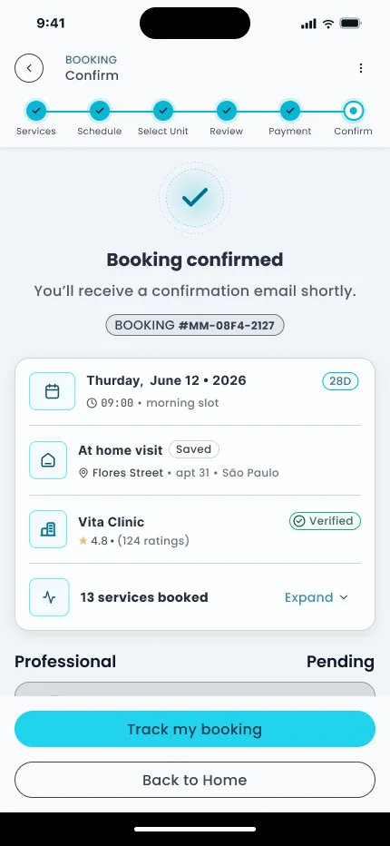
Resultado
O produto sob demanda não existia antes deste projeto. Os números abaixo são projeções fundamentadas em benchmarks publicados, não dados pós-lançamento. O produto foi construído para uma empresa que não pôde compartilhar resultados.
+35%
Conversão projetada de checkout: redução de formulário para 12-14 campos + revelação progressiva
Baymard, 2026
60%
Pacientes que relatam atrito no agendamento digital, endereçado pela IA orientada por horário
McKinsey, 2025
74%
Usuários que abandonam por estresse de decisão, mitigado pelo indicador de progresso de 6 etapas
Accenture, 2024
19%
Abandono por criação obrigatória de conta, removido de ambos os fluxos
Baymard, 2024
Três padrões de confiança de serviços que os pacientes já usam, adaptados para o contexto médico:
Custo oculto é o principal fator de saída no ecommerce (McKinsey, 2025). A garantia torna a estrutura de custo transparente: o paciente sabe exatamente o que está pagando, para quem, e quando é liberado.
Vamos conversar
Tem um projeto?
Vamos fazer acontecer.